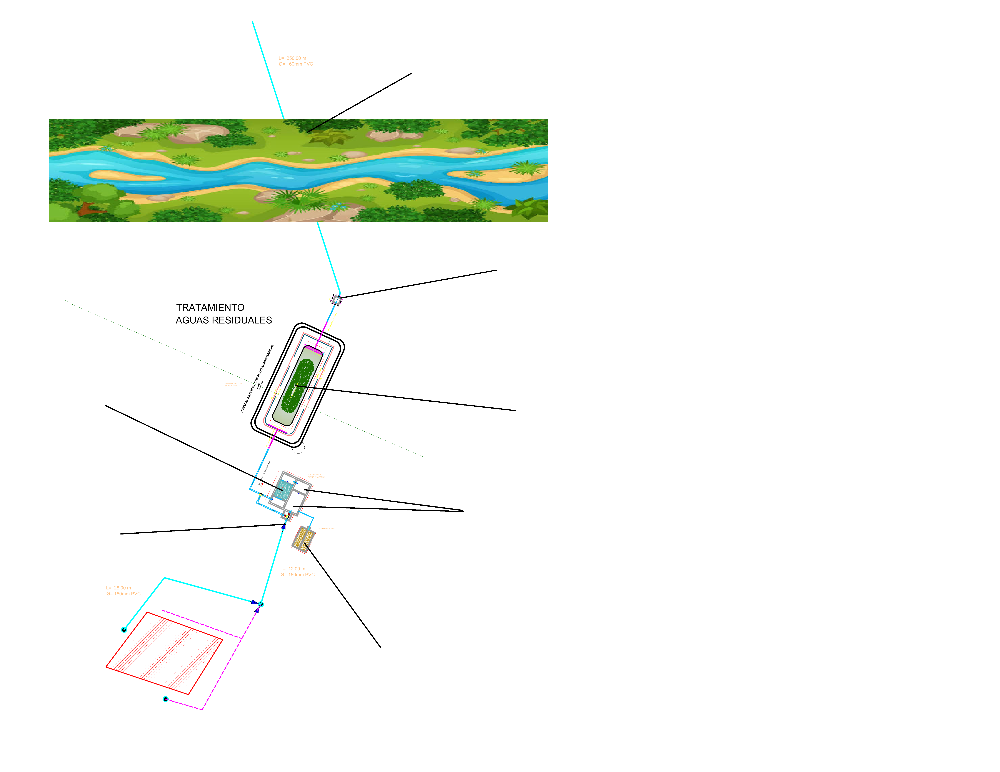

Explora el funcionamiento interactivo de la planta
Esta planta trata aguas residuales domésticas mediante un sistema combinado de procesos anaerobios, humedales y secado de lodos.
Objetivo: Reducir la contaminación antes de devolver el agua al medio ambiente.
